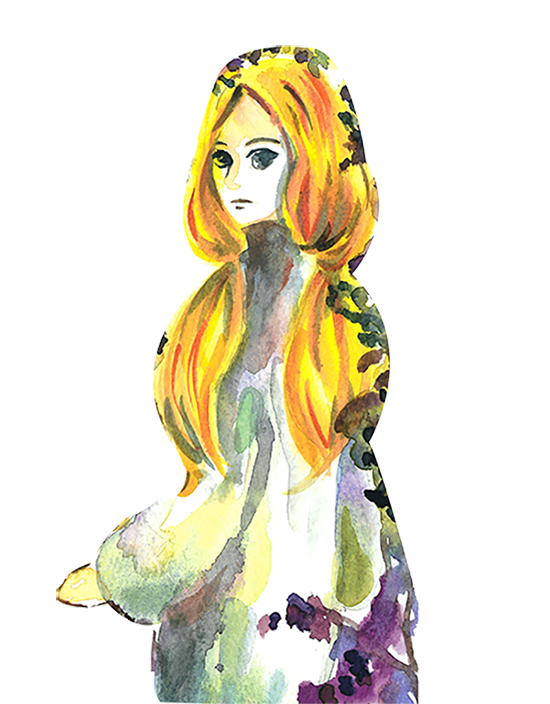
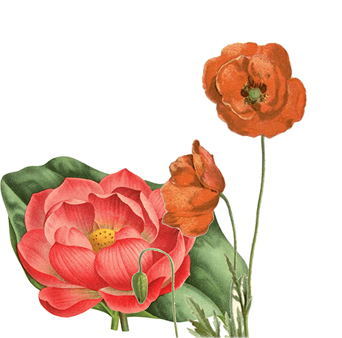
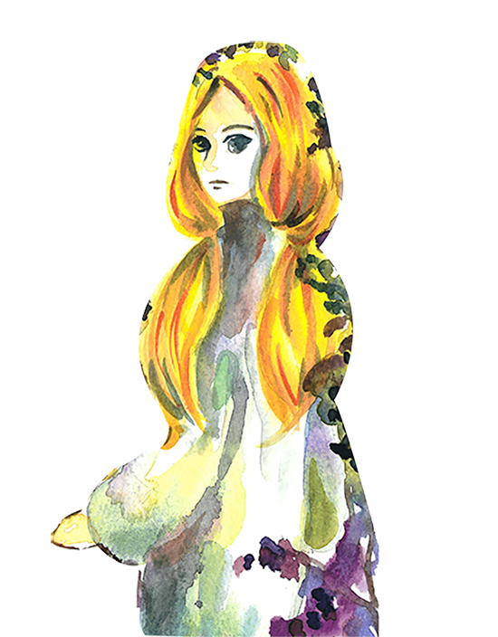
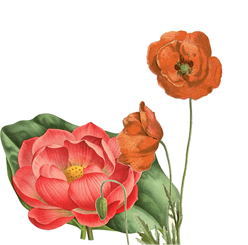

女巫，概念
The Witch of Endor
The Witch of Endor is known also as the biblical Medium of Endor. According to legend, she was a medium who apparently summoned the Prophet Samuel’s spirit. She is known from the Old Testament, but became a part of other traditions too.As the story goes, King Saul went to the Witch of Endor for answers about how to defeat the Philistines. The Witch then summoned the ghost of the prophet Samuel—who didn’t tell him how to defeat the Philistines—but prophesied that he would be defeated and join his three sons in the afterlife.